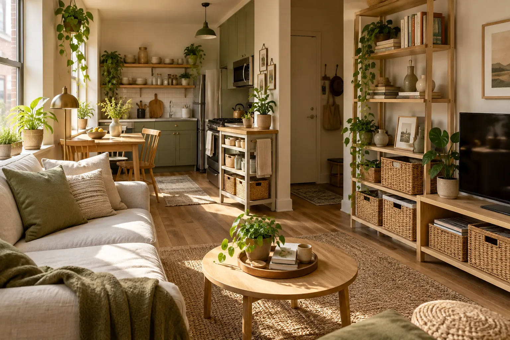
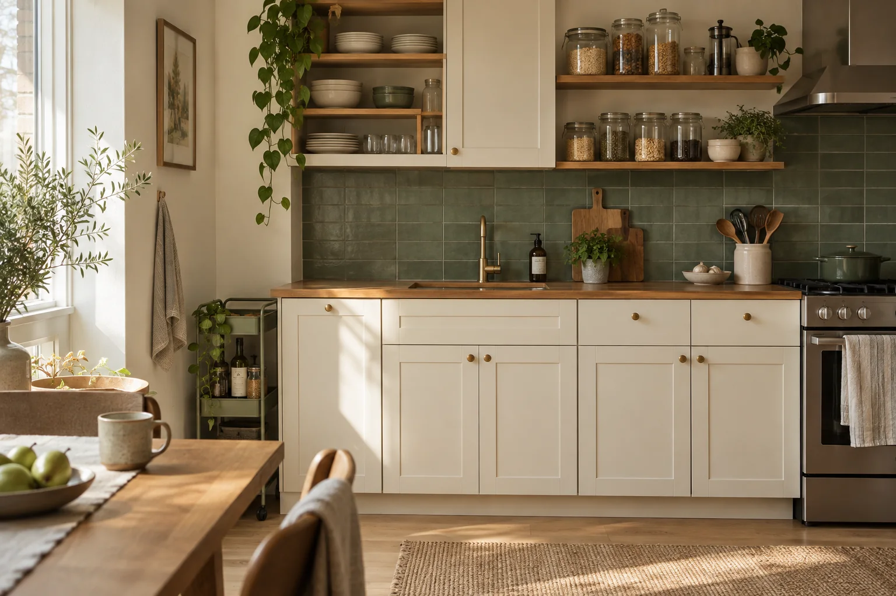
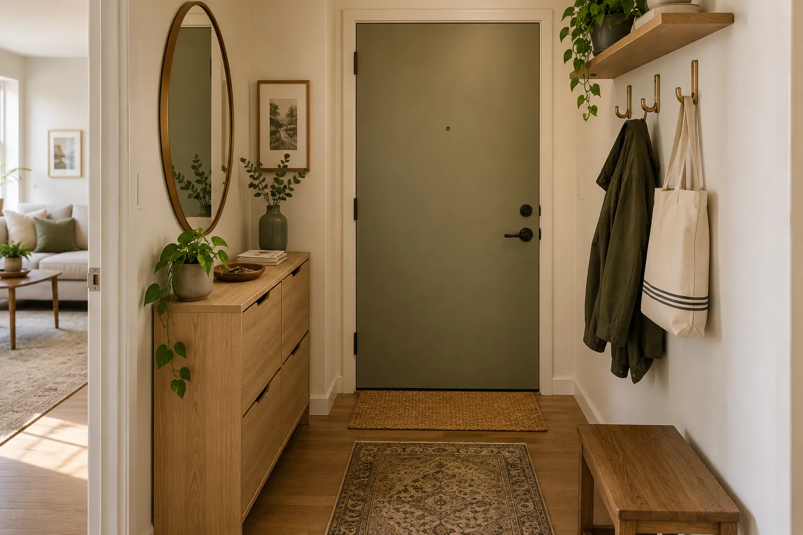
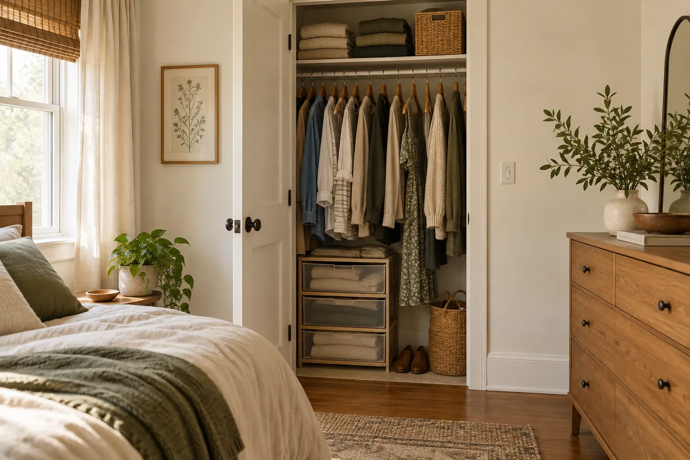
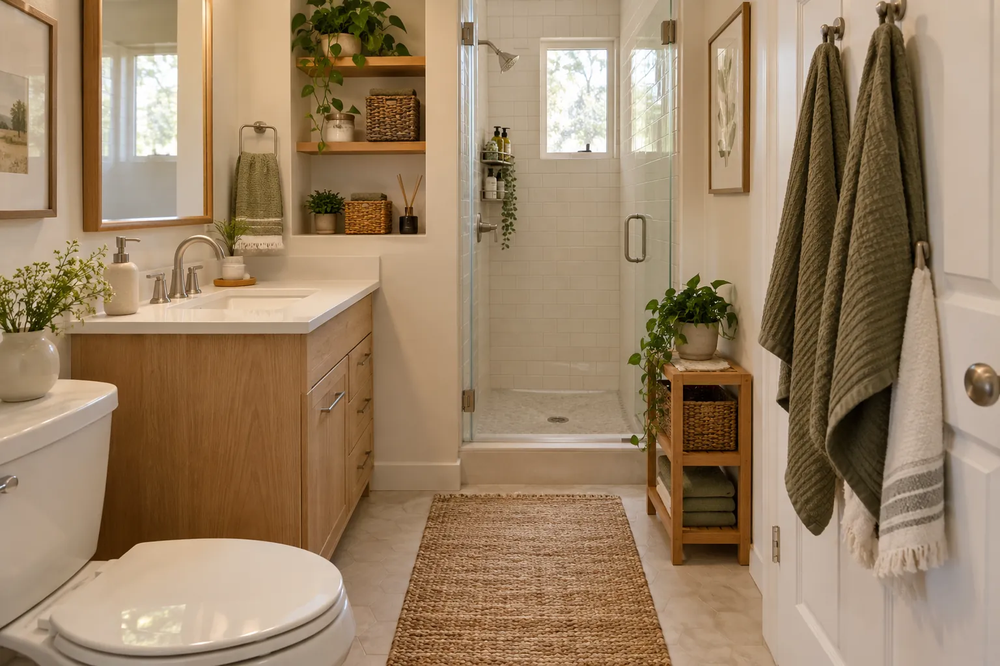
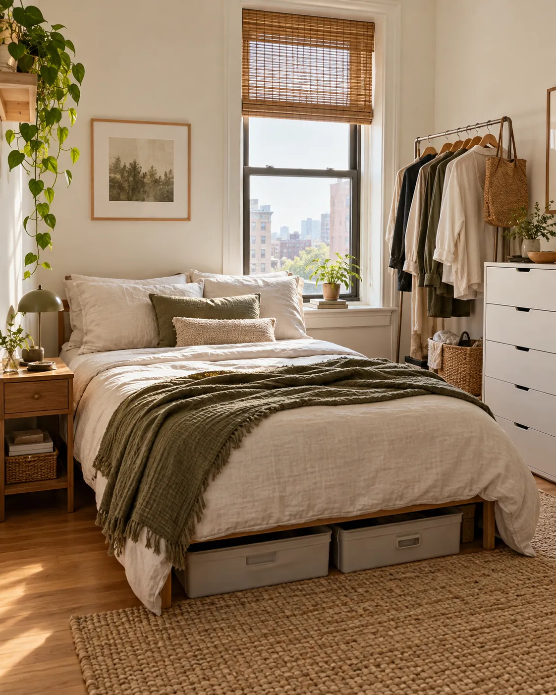
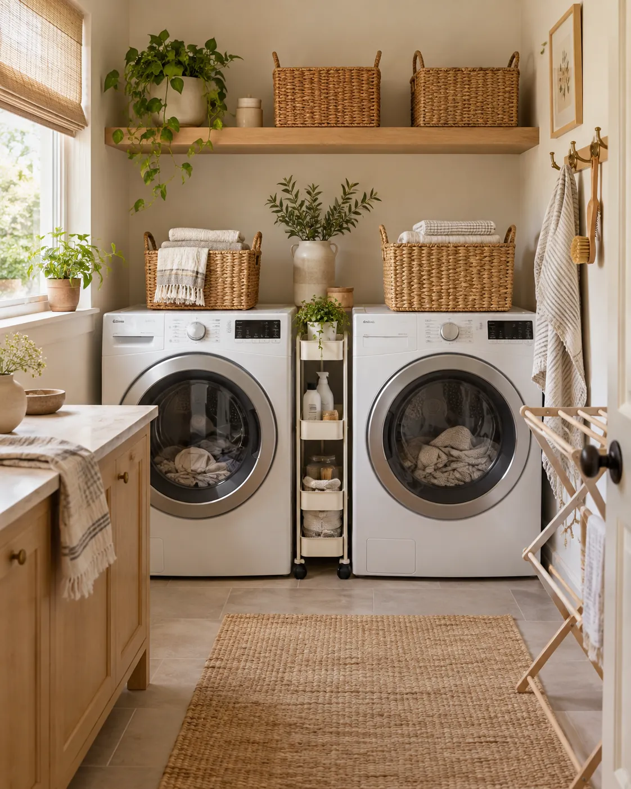
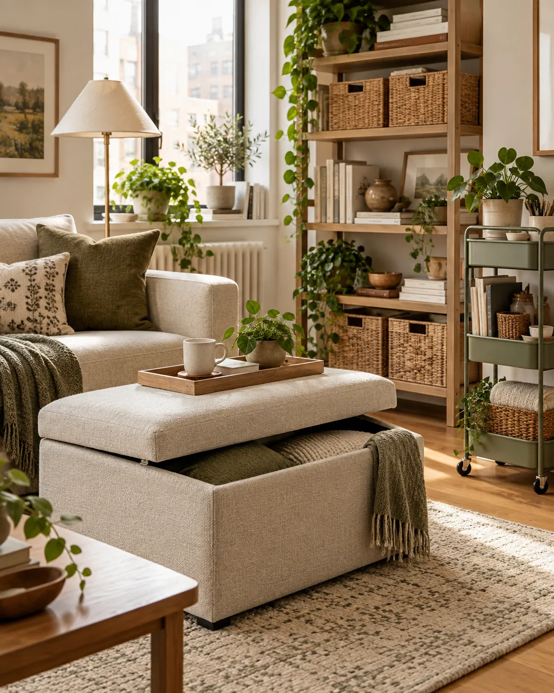

SMALL SPACES · SMARTER LIVING
Make more room for the life you love.
Practical storage ideas, simple organization systems and thoughtfully selected solutions for compact homes.
Explore the guides →
CALM HOMEUseful ideas.Less clutter.
ROOM BY ROOM
Start with your space
Choose the room that needs to work harder. Each guide starts with the problem, then the solution.

KitchenSmall Kitchen
Make cabinets, counters and overlooked corners work harder.
Explore ideas → New Guide
New GuideKitchen Storage Ideas
Seven practical ways to save serious space in a compact kitchen.
Explore the guide →
New GuideSmall Entryway
Give keys, mail, coats and everyday gear a place without crowding the door.
Explore the guide →
New GuideSmall Closet
Make shelf, hanging and floor space work in a compact apartment closet.
Explore the guide →
New GuideSmall Bathroom
Seven renter-friendly ways to organize shower, vanity and overlooked spaces.
Explore ideas →
BedroomSmall Bedroom
Use vertical, under-bed and hidden storage more effectively.
Explore ideas →
LaundryLaundry Room
Organize narrow gaps, walls and everyday laundry supplies.
Explore ideas →
StorageSmall Space Storage
Versatile storage solutions that work throughout the home.
Explore ideas →FEATURED
Practical picks for a more functional kitchen
Smart organizers can make everyday cooking and storage easier, even in a small kitchen.
View kitchen guide →difference.
Useful before promotional.
Kotiori is built around practical ideas first. Product recommendations are selected to support a specific storage problem—not to add more clutter.